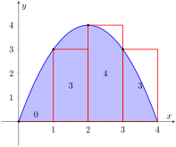
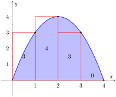
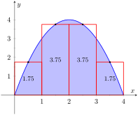

Example 1.3.4. Using the Left Hand, Right Hand and Midpoint Rules.
Approximate the value of \(\int_0^4 (4x-x^2)\, dx\) using the Left Hand Rule, the Right Hand Rule, and the Midpoint Rule, using 4 equally spaced subintervals.
Solution.
We break the interval \([0,4]\) into four subintervals as before. In Figure 1.3.5(a) we see 4 rectangles drawn on \(f(x) = 4x-x^2\) using the Left Hand Rule. (The areas of the rectangles are given in each figure.)
Note how in the first subinterval, \([0,1]\text{,}\) the rectangle has height \(f(0)=0\text{.}\) We add up the areas of each rectangle (height× width) for our Left Hand Rule approximation:
\begin{align*}
\amp f(0)\cdot 1 + f(1)\cdot 1+ f(2)\cdot 1+f(3)\cdot 1\\
=\amp 0+3+4+3 = 10\text{.}
\end{align*}
Figure 1.3.5(b) shows 4 rectangles drawn under \(f\) using the Right Hand Rule; note how the \([3,4]\) subinterval has a rectangle of height 0.
In this example, these rectangles seem to be the mirror image of those found in Figure 1.3.5(a). This is because of the symmetry of our shaded region. Our approximation gives the same answer as before, though calculated a different way:
\begin{align*}
\amp f(1)\cdot 1 + f(2)\cdot 1+ f(3)\cdot 1+f(4)\cdot 1\\
\amp =3+4+3+0= 10\text{.}
\end{align*}
Figure 1.3.5(c) shows 4 rectangles drawn under \(f\) using the Midpoint Rule.
This gives an approximation of \(\int_0^4(4x-x^2)\, dx\) as:
\begin{align*}
f(0.5)\cdot 1 + f(1.5)\cdot 1+ f(2.5)\cdot 1 \amp +f(3.5)\cdot 1\\
\amp =1.75+3.75+3.75+1.75 = 11\text{.}
\end{align*}
Our three methods provide two approximations of \(\int_0^4(4x-x^2)\, dx\text{:}\) 10 and 11.

The parabola in Figure 1.3.1 approximated using 4 strips of width 1. The height of each strip is fiven by the left hand rule. The first strip has a height of 0, and an area of 0. The second strip has a height of 3, and an area of 3. The third strip has a height of 4, and an area of 4. The fourth strip has a height of 3, and an area of 3. Each rectangle touches the curve in the top left corner.

The parabola in Figure 1.3.1 approximated using 4 strips of width 1. The height of each strip is fiven by the right hand rule. The first strip has height of 3, and an area of 3. The second strip has height of 4, and an area of 4. The third strip has height of 3, and an area of 3. The fourth strip has height of 0, and an area of 0. Each rectangle touches the curve in the top right corner.

The parabola in Figure 1.3.1 approximated using 4 strips of width 1. The height of each strip is fiven by the Midpoint Rule. The first strip has a height and area of 1.75. The second strip has a height and area of 3.75. The third strip has a height and area of 3.75. The fourth strip has a height and area of 1.75. Each rectangle touches the curve in the top center of the rectangle.